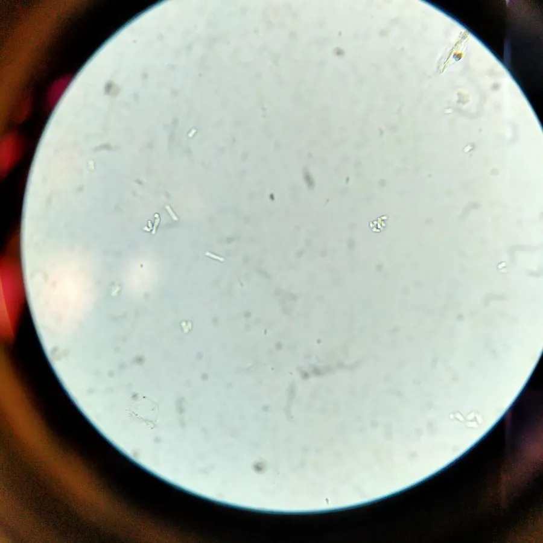

真菌 · 真菌界
裂殖酵母 Schizosaccharomyces pombe

以分裂方式繁殖的酵母，是研究细胞周期和 DNA 损伤修复的经典模式生物，也是酿造中可产生特殊风味的菌种。
- 分类
- 门子囊菌门纲裂殖酵母纲目裂殖酵母目科裂殖酵母科属裂殖酵母属
- 栖息环境
- 小米啤酒等发酵液、果汁和含糖环境中，实验室广泛培养
- 地理分布
- 全球分布，常见于发酵食品和饮料中
- 保护级别
- 暂无评估（工业与科研用酵母，非保护对象）
物种志
裂殖酵母是子囊菌门裂殖酵母目的单细胞真菌，细胞呈圆柱形，通过中间横裂的方式繁殖，因此得名“裂殖酵母”。在培养基上菌落呈乳白色；在显微镜下可见细胞两极生长、中央形成隔膜后一分为二，与出芽繁殖的酿酒酵母明显不同。
裂殖酵母最早从非洲的小米啤酒中分离得到，因此种加词为 pombe（小米啤酒）。它在发酵中能产生独特的果香和酸味，被用于部分啤酒和非洲传统酒类的酿造。更重要的是，裂殖酵母是研究细胞周期、DNA 损伤修复和染色体生物学的经典模式生物，许多细胞周期调控基因首先在它身上被发现。它繁殖快、易于遗传操作，至今仍是重要的实验室研究对象。
形态与习性
- 分类子囊菌门裂殖酵母目裂殖酵母科裂殖酵母属
- 繁殖通过细胞中间横裂繁殖，不同于出芽酵母
- 形态圆柱形单细胞，菌落乳白色
- 来源最早从非洲小米啤酒中分离得到
- 科研价值细胞周期和 DNA 损伤修复研究的经典模式生物
- 应用部分啤酒和传统酒类酿造
趣味知识
- 裂殖酵母通过细胞中间横裂繁殖，与出芽繁殖的酿酒酵母不同。
- 它最早从非洲的小米啤酒中分离得到，种加词 pombe 就指小米啤酒。
- 许多细胞周期调控基因首先在裂殖酵母中被发现，它是经典模式生物。